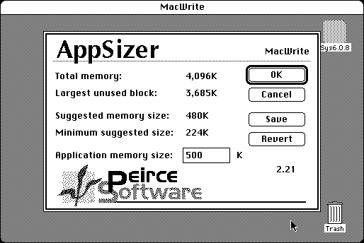

Download
AppSizer2.21.zip (45K) AppSizer 2.21 repackaged into a zipped hfs disk image and checksum file. The disk image can be mounted with Mini vMac.
AppSizer2.21.sit.hqx (66K) AppSizer 2.21 in the original format.
copyright: Peirce Software
mod date: Apr 28, 1996
license: shareware
last known url
(gone)
“Allows you to modify an application’s MultiFinder memory partition size as you launch it.” “Tested with System software versions 6.08, 7.0, 7.1, and 7.5.”

If you find these downloads useful, please consider helping the Gryphel Project, which hosts them.
Here are the md5 checksums for the downloads, signed with Gryphel Key 5:
--------- GRY SIGNED TEXT --------- 49debe3410392e59b222ae23d8dcc2b3 AppSizer2.21.zip 966cf7b0621bd7951deb991f37beaf57 AppSizer2.21.sit.hqx ------- BEGIN GRY SIGNATURE ------- Gry/4Xa8CFcUzxdN/Go6lwsFG2R3IRXjUsHGq7iFI+xoWom2Rs/J3+oJYxtPNvhM OgqqqibchV4rbhDGKUPlxCTQa6l4I6d2h9fglv6BqKP4Rg3uhv/h1lm/PCwJIyTs a7kN4J6fGNcCeusX70J/vScLazQjpniweYM8udtjIRhWHT5D0ATHuMS8oayoNmyO -------- END GRY SIGNATURE --------